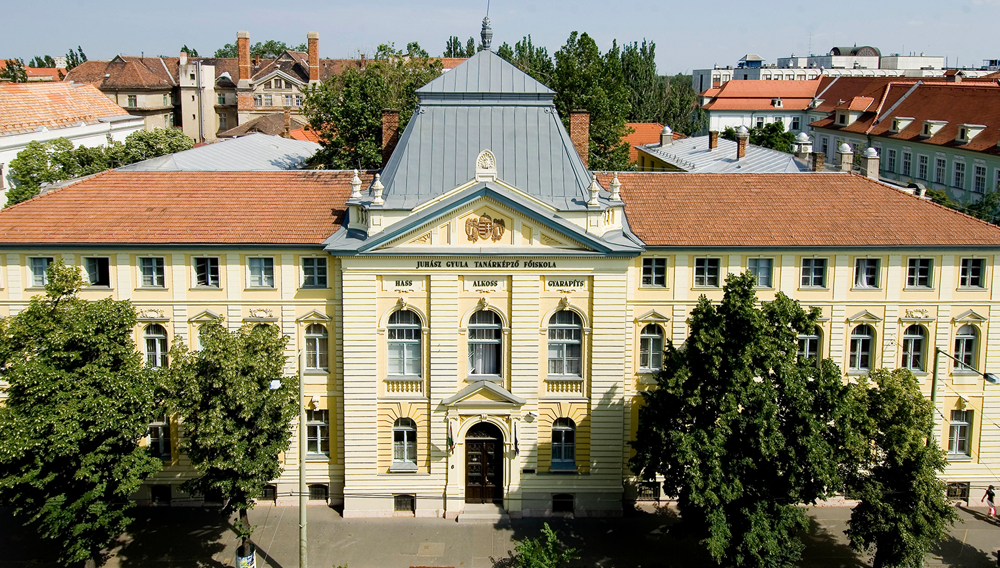

A Szegedi Tudományegyetem Juhász Gyula Pedagógusképző Kara Magyarország legrégebbi tanárképző intézménye. A polgári leány- és fiúiskolák számára 1873-tól képeztek tanárokat Budapesten az akkori tanítónő- és tanítóképző intézetekben. A kezdetben kétéves képzés ideje és színvonala fokozatosan nőtt, így 1918-ban már főiskolai rangot kaptak a tanárképzők.1928-ban került városunkba, Szegedre a tanárképzés Klebelsberg Kuno kultuszminiszter reformjainak köszönhetően. E reformok keretében egységesítette a polgári iskolai tanárképzést, képzési idejét 4 évre emelte, s összekapcsolta az egyetemi képzéssel. A gyakorlati képzés céljára gyakorló polgári iskolát hozott létre. Ezek az események szervesen illeszkedtek abba a nagyszabású kultúrpolitikai koncepcióba, amelynek köszönhetően a '20-as években Szeged diákvárossá s a régió szellemi központjává vált.1948-ban a polgári iskolák megszűnésével a polgári iskolai tanárképzés is befejeződött, s az intézmény pedagógiai főiskolává vált. A korszakra jellemző oktatáspolitikai törekvéseknek megfelelően a negyvenes és az ötvenes években többször módosították a tanárképzést, végül 1964-re alakult ki az a négyéves, kétszakos képzés, amely egészen a közelmúltig folyt a karon. Az intézmény 1973-ban, a Tanárképzés centenáriuma alkalmából vette fel a szegedi költő nevét.
| 2025/2026. tanév rendje I. félév | |
|---|---|
| Szorgalmi időszak | 2025. szeptember 8 - 2025. december 13. |
| Vizsgaidőszak | 2025. december 15 - 2026. január 31. |
| Téli szünet | 2025. december 24 - 2025. január 3. |
| Záróvizsga | 2026. január 12 - január 16. |